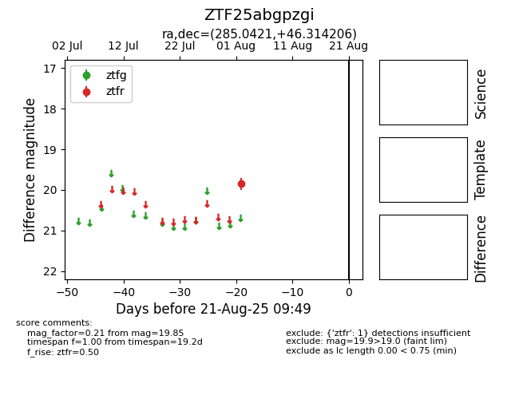

Target ZTF25abgpzgi at 2025-08-21 09:49, see:
FINK: fink-portal.org/ZTF25abgpzgi
Lasair: lasair-ztf.lsst.ac.uk/objects/ZTF25abgpzgi
ALeRCE: alerce.online/object/ZTF25abgpzgi
alt names
ZTF25abgpzgi (ztf,alerce)
coordinates:
equatorial (ra, dec) = (285.0421,+46.31421)
galactic (l, b) = (76.4582,+17.83811)
photometry
last ztfr=19.85
1 ztfr detections
